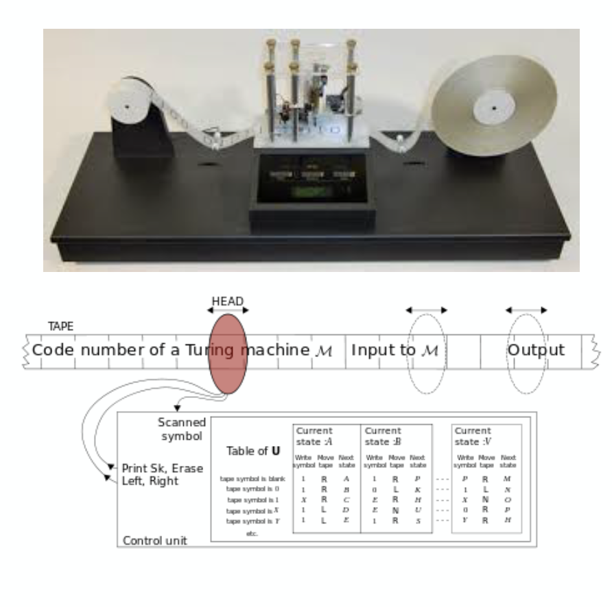

Week 3
History of Microprocessors
CADC (1968): a digital computer for the main flight control computer in the US Navy’s F-14 Tomcat fighter contained “a 20-bit, pipelined, parallel multi-microprocessor”. US Navy refused to allow publication of the design until 1997.
TMS 1000: the first microcontroller (also called a microcomputer) and the first single- chip CPU from TI in 1971. A computer-on-a-chip (the single-chip microprocessor architecture) combines the microprocessor core (CPU), memory, and I/O (input/output) lines onto one chip.
Intel 4004
- 2250 transistors and could perform up to 90,000 operations/sec in four-bit data
- Generally regarded as the first commercially available microprocessor
8bit - 16bit - 32bit - 64bit …
- Intel 8008 / Zilog Z-80 / Intel 8080 …
- National Semiconductor IMP-16, TI TMS9900, 80286 …
- Motorola MC6800, ARM, Intel 32bit-x86 …
- AMD x86-64, PowerPC, Intel EM64T, 64bit-ARM …
Execution cycle
Automatic execution of instruction
- Turing machine
- A machine that mechanically operates on a tape
- On this tape are symbols, which the machine can read and write, one at a time, using a tape head.
- Operation is a finite set of elementary instructions such as “in state 42, if the symbol seen is 0, write a 1”
- Turing imagines not a mechanism, but a person whom he calls the “computer”, who executes these deterministic mechanical rules slavishly (or as Turing puts it, “in a desultory manner”).

Performance, density, power

More transistors with higher frequency
Knee points around 2000 ~ 2005
Hurdles to be tackled
- power, temperature
Future of microprocessor
In the next 20 years
- Package power/total energy consumption limits number of logic transistors
- Organizing the logic - Multiple cores and customization
- Orchestrating data movement - Memory hierarchies and interconnects
- Pushing the envelope - Extreme circuits, variability, resilience
- Software challenges renewed - Programmability versus efficiency
From Shekhar Borkar, Andrew A. Chien, 2011
Microprocessor internals
Control unit (CU) - decodes the program instruction in the IR, selecting machine resources such as a data source register and a particular arithmetic operation, and coordinates activation of those resources.
Arithmetic logic unit (ALU) - performs mathematical and logical operations
Register pile
Registers
Program counter (PC) - an incrementing counter that keeps track of the memory address of the instruction that is to be executed next or in other words, holds the address of the instruction to be executed next.
Memory address register (MAR) - holds the address of a memory block to be read from or written to
Memory data register (MDR) - a two-way register that holds data fetched from memory (and ready for the CPU to process) or data waiting to be stored in memory. (This is also known as the memory buffer register (MBR).)
Instruction register (IR) - a temporary holding ground for the instruction that has just been fetched from memory.
Ex) ARM7-TDMI structure

DATA, ADDR bus - 32bits
- How about the size of addressable memory space?
Registers = 31 + 6, 32bit regs
In-line barrel shifter
Multiplier, ALU, Incrementer
Instructor decoder & control logic